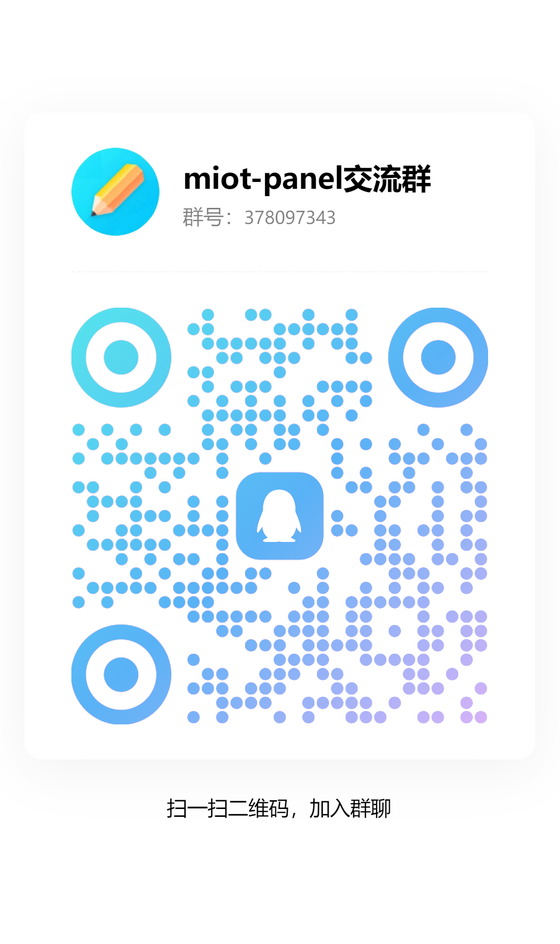

Features
一块屏幕，接管整个家
从设备控制到摄像头、音乐和 AI 音箱，面板把日常操作收在一处；后台负责配置、诊断和迁移。
云端设备控制
登录小米账号即可枚举设备，不依赖局域网 IP 或设备 Token。
通用自动控件
按 MIoT 规格生成开关、滑杆、枚举和动作，额外属性自动出现。
摄像头一屏管理
go2rtc + ffmpeg 自动安装；画面、清晰度、云台和跨网段远程服务。
音乐与 AI 音箱
Songloft / go-music-dl、小爱扫码、多房间、语音口令和大模型人设。
8 套结构级主题
米家、苹果、魅族、赛博、莫兰迪、像素等，摄像头页同步。
自定义排版
拖拽排序、每页横竖页数、居中布局，墙面板与手机共用一套。
多端与多平台
Windows / Linux / Docker / ARMv7，PWA 与 Android 客户端。
本地优先与安全
PIN、签名 Cookie、限流和审计；数据保存在你自己的设备上。
Platforms
放在你已有的设备上
支持从玩客云到 x86 迷你主机、NAS 和手机。推荐使用一键安装包，数据目录可保留。
Windows
一键安装、隐藏控制台、开机自启
Linux
树莓派、玩客云、电视盒子、迷你主机
Docker / NAS
数据卷保留配置，适合 NAS 与服务器
Android / PWA
自动发现、原生 PIN、添加到主屏幕
Quick start
三步开始使用
下载、设置 PIN、登录小米账号。摄像头和音乐中心可以之后再装。
Windows 推荐
下载 miot-panel-v0.7.26-windows-installer.exe
运行安装器，按提示完成安装
浏览器打开 http://127.0.0.1:8080设置管理员 PIN → 登录小米账号
Linux / 玩客云 armv7
chmod +x miot-panel-v0.7.26-linux-amd64-installer.run
sudo ./miot-panel-v0.7.26-linux-amd64-installer.run
# armv7 换用 linux-armv7-installer.run访问 http://<设备IP>/
Docker / NAS 多架构
docker load -i miot-panel-v0.7.26-docker-multiarch.tar
docker run -d --name miot-panel -p 8080:80 \
-v miot_data:/data --restart unless-stopped \
liaozhenqiang/miot-panel:0.7.26数据卷保留配置与登录态
Download
下载最新版本
选择你的平台。升级一般保留 PIN、登录态和设备设置。
最新版本 v0.7.26
把面板带回家
Windows 一键安装器、Linux 自解压安装器、Docker 多架构镜像与 Android 客户端都在 Release 页面。
打开 GitHub Releases当前版本资产
miot-panel-v0.7.26-windows-installer.exeWindows 一键安装（x64 / x86 / ARM64）miot-panel-v0.7.26-windows-x64-portable.zipWindows x64 便携包miot-panel-v0.7.26-linux-amd64-installer.runLinux x86_64 自解压安装miot-panel-v0.7.26-linux-armv7-installer.runLinux ARMv7（玩客云等）miot-panel-v0.7.26-docker-multiarch.tarDocker 多架构 OCI 镜像miot-panel-android-1.0.5.apkAndroid 客户端需要公网服务器吗？
不需要。面板和摄像头组件都跑在你的设备上；远程访问可以用 VPN 或自己的内网穿透。
玩客云能跑吗？
可以，使用 Linux ARMv7 包；包内带预编译依赖，不需要现场编译。
摄像头必须同网段吗？
不必须。跨网段时在后台填写远程 go2rtc 地址即可；远程设备需自行限制来源。
升级会丢设置吗？
正常升级保留数据、PIN 和登录态；升级前也可以在后台导出一份带口令的迁移包。
Community
加入交流群
部署、设备兼容或功能反馈，都欢迎来 QQ 群一起讨论。

让家里的旧设备，再当一次主角。
米家面板是开源项目，欢迎部署、反馈和参与改进。